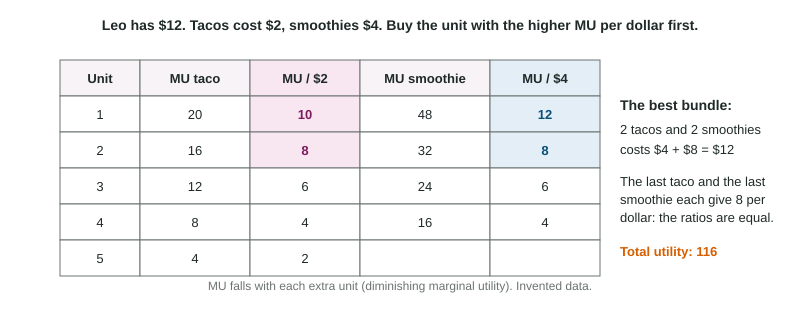

Leo has $12 for lunch at a food festival. Tacos cost $2 and smoothies $4. The first smoothie is wonderful, the second is still very good, the third is just fine. Nobody makes these choices by adding up totals for every possible combination. People decide one more unit at a time: is the next taco worth it? Is the next dollar better spent on a taco or on a smoothie? That habit, thinking at the margin, is the most important tool in this course.
Thinking at the margin
"Marginal" means one more. Marginal analysis compares the extra benefit of one more unit, its marginal benefit, with the extra cost of that unit. The rule is simple: do one more unit as long as its marginal benefit is at least its marginal cost, and stop when it is less.
The extra cost of one more unit is its marginal cost (MC). Units 3 to 6 use the same rule as "choose the quantity where marginal benefit equals marginal cost".
Worked example: how many slices? Nadia would pay $5.00 for her first slice of pizza, $4.00 for a second, $3.00 for a third, $2.00 for a fourth and $1.00 for a fifth. A slice costs $2.50.
- 1st slice: worth $5.00, costs $2.50. Buy it.
- 2nd: $4.00 against $2.50. Buy it.
- 3rd: $3.00 against $2.50. Buy it.
- 4th: $2.00 against $2.50. It adds less than it costs: stop at 3 slices.
- Check with totals: net benefit is $2.50, $4.00, $4.50 and then $4.00. It peaks at 3 slices, the same answer.
If the price fell to $1.50, the 4th slice (worth $2.00) would pass the test and the 5th (worth $1.00) would not, so she would buy 4. A lower cost per unit means more units pass.
Utility and diminishing marginal utility
Economists call the satisfaction a consumer gets from goods utility, measured in made-up units called utils. Total utility is the satisfaction from all the units consumed; marginal utility (MU) is the extra satisfaction from one more unit, the change in total utility. If total utility from 1, 2 and 3 movie tickets is 40, 70 and 90 utils, the MU of the third ticket is utils.
Marginal utility usually falls as you consume more of a good: the first smoothie is better than the fourth. This is diminishing marginal utility. It does not mean total utility falls; as long as MU is positive, each unit still adds something, just less than the one before.
Spending a budget: marginal utility per dollar
A consumer's income and the prices of goods form a budget constraint: total spending cannot be more than the budget. Within it, the goal is the most total utility. Because goods have different prices, comparing MU alone is a mistake: a smoothie gives more utility than a taco, but it also costs twice as much. Compare marginal utility per dollar, MU divided by price.
The utility-maximizing rule: spend the whole budget so that the last dollar spent on each good gives the same marginal utility:

Worked example: Leo's $12. MU of tacos ($2): 20, 16, 12, 8, 4. MU of smoothies ($4): 48, 32, 24, 16.
- MU per dollar. Tacos: 10, 8, 6, 4, 2. Smoothies: 12, 8, 6, 4.
- Buy the highest first. 1st smoothie (12 per dollar, $4 spent). Then 1st taco (10, $6 spent).
- Next, a tie at 8: the 2nd taco and the 2nd smoothie. Buy both: $2 + $4 brings spending to $12.
- Check the rule. The budget is spent (), and the last taco and last smoothie both give 8 utils per dollar.
- Total utility: utils. Any other $12 bundle gives less: 3 smoothies give 104.
Two slips cost points here: ranking goods by MU instead of MU per dollar, and dividing by the wrong good's price.
If the ratios are unequal, money can be moved to raise total utility. If the last book gives 30 utils per dollar and the last concert ticket 18, a dollar moved from concerts to books loses about 18 utils and gains about 30.
Sunk costs do not change the answer
A sunk cost has already been paid and cannot be recovered. Because it is the same whatever you decide next, it should not affect the decision; only the benefits and costs still ahead do. Pellham Games has spent $200,000 on a game. Finishing costs $50,000 more and should bring $80,000 in sales. It should finish, because finishing adds $80,000 for $50,000, not because of the $200,000. If expected sales fell to $40,000, it should stop, however much it already spent. In the same way, a fixed amount of benefit you get whatever you choose does not change the best choice either. "We have already spent so much" is never, by itself, a reason to continue.